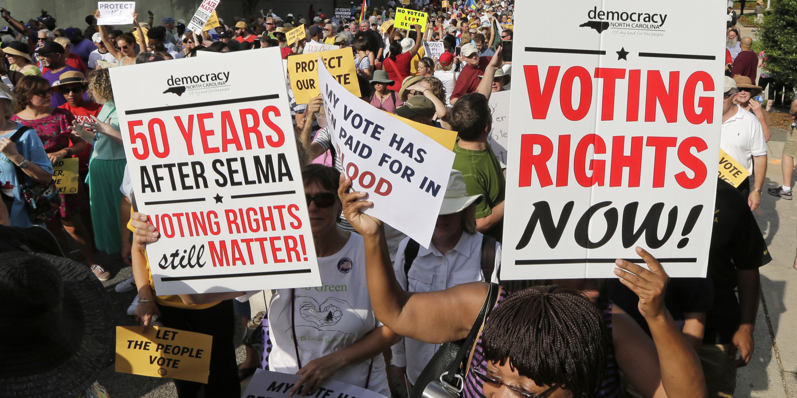

Progression of Civil Rights
History of Civil Rights In The United States
1865
13_amendment_image
The Thirteenth Amendment abolished slavery and involuntary servitudes, except as a punishment for a crime if duly convicted. This law was approved by the 38th Congress between 1863 and 1865. It was ratified by the states on December 6th, 1865.
1866
Civil Rights Act of 1866
The Civil Rights Act of 1866 stated that all persons born or naturalized in the United States would become a citizen, excluding Native Americans. The act also promised rights of all citizens to both make & enforce contracts and to purchase, sell and leave property. This was passed by the 39th Congress during 1865-1867.
The Civil Rights Act of 1866 was the first federal law in the United States to define citizenship and promise that all citizens are equally protected by the law.
1867
Henry
The First Reconstruction Act divided the former Confederate States into five military states, which were each administered by a general who'd maintain law and order. This act required former Confederate states to adopt these new constitutions, ratify the Fourteenth Amendment, and allow African American suffrage for readmission to the Union. This was passed by the 39th Congress between 1865 and 1867.
1868
Civil Rights Act of 1866
The Fourteenth Amendment stated that anyone born or naturalized in the U.S. were citizens, and if any states were to deny or suppress the immunities or privileges of men over the age of 21, they'd be subject to proportional reductions in its representation in the U.S. House of Representatives. This was approved by the 39th Congress during 1865-1867 and was ratified by the states on July 9, 1868.
1869
Henry
The Second Reconstruction Act allowed for the election of delegates to participate in constitutional conventions in the former Confederate states and required that the governors of each military district are to register all male citizens to vote, granted they were at least 21 years old, and have taken an oath of loyalty and haven to been disenfranchised for participating in the rebellion against the United States. Drafts of state constitutions were required to be submitted to Congress for approval. This was passed by the 40th Congress between 1867-1869.
1869
Civil Rights Act of 1866
The Governors of each military district that were established in former Confederate states had absolute authority over all civilian and military officials at both the state and local level. The act also granted that governors of each military district have the power to determine the eligibility of voters. This was passed by the 40th Congress between 1867 and 1869.
1869
Henry
The Fourth Reconstruction Act states that in former Confederate states and any states that adopted a new constitution, delegates in constitutional conventions must be decided by a majority of the votes cast, not by a majority of the number of registered voters. This was passed by the 40th Congress between 1867-1869.
1871
First Enforcement Act
The First Enforcement Act prohibited any discrimination in the registration of voters based on color, race, or any previous conditions of servitude. The act also established penalties if one were to interfere with a person's right to vote. It also gave federal courts the authority to enforce the act and to employ any militarized forces (federal marshals & army) to uphold it. Passed by the 41st Congress (1869-1871) as H.R. 1293.
1871
Henry
The Second Enforcement Act allowed federal circuit judges to appoint supervisors which would monitor federal elections. The act also authorized US marshals to employ duties to maintain order at polling places. Passed by the 41st Congress (1869-1871) as H.R. 2634.
1873
First Enforcement Act
The Third Enforcement Act guaranteed all United State citizens the rights afforded by the constitution and provided legal protection under the law. The act also held state governments liable for failure to provide all citizens “with equal protection under the law”. These empowered the President to suspend habeas corpus in areas that were in rebellion against the government. Passed by the 42nd Congress (1871-1873) as H.R. 320.
1875
Henry
The Civil Rights Act of 1875 Act barred discrimination in both public accommodations and on public conveyances. The act also prohibited the exclusion of African Americans from jury duty. Passed by the 43rd Congress (1873-1875) as H.R. 796.
1920
First Enforcement Act
The Nineteenth Amendment gave women the right to vote in the United States. Approved by the 66th Congress (1919-1921) as H.J Res. 1; ratified by the states on August 18th; 1920
1957
Henry
The Civil Rights Act of 1957 created the six-member Commission on Civil Rights, which ordered to document cases in which certain citizens were deprived of their right to vote, and to report on the effectiveness of existing federal law with respect to the Fourteenth Amendments equal protection clause. The act also established the Civil Rights Division within the U.S. Department of Justice and allowed the U.S. Attorney General to see any court injunctions which were against deprivation and the obstruction of voting rights by state officials. Passed by the 85th Congress (1957-1959) as H.R. 6127.
1960
First Enforcement Act
The Civil Rights Act of 1960 expanded voting rights in the act prior, and introduced criminal penalties if one were to obstruct the implementation of federal court orders. The act also required that voting & registration records for federal elections be preserved. Passed by the 86th Congress (1959-1961) as H.R. 8601.
1965
Henry
The Twenty-fourth Amendment removed the poll tax as a requirement for federal elections. This was approved by the 87th Congress (1961-1963) as S.J. Res. 29; ratified by the states on January 23, 1964.
1965
First Enforcement Act
The Civil Rights Act of 1964 prohibited discrimination in any public facilities, accommodations, and federally funded projects. The act also prohibited any employment discrimination, and created the Equal Employment Opportunity Commission, with the objective of monitoring employment discrimination. The act also provided additional capacities to enforce voting rights and extended the Civil Rights Commission for four years. Passed by the 88th Congress (1963-1965) as H.R. 7152.
1970
Henry
The Voting Rights Act of 1965 extended the provisions of the Voting Rights Act for five years. Passed by the 91st Congress (1969-1971) as H.R. 4249.
1972
First Enforcement Act
The Equal Employment Opportunity Act of 1972 gave authority to the Equal Employment Opportunity Commission to bring federal lawsuits against employers who were accused of engaging in discriminatory employment practices. The act also expanded the anti-employment discrimination provisions to cover educational institutions, state and local governments, and private employers with at least 15 employees. Passed by the 92nd Congress (1971-1973) as H.R. 1746.
1982
Henry
The Voting Rights Act Amendments of 1982 of 1982 extended the provisions of the Voting Rights Act for 25 years and allowed jurisdictions that could contribute evidence of maintaining a clear voting rights record for at least 10 years to avoid preclearance coverage. The act also provided for aid and instruction to disabled & illiterate voters and extended the requirement for bilingual election materials in jurisdictions with significant language minority populations. Passed by the 97th Congress (1981-1983) as H.R. 3112
1987
First Enforcement Act
The Civil Rights Restoration Act of 1987 established that any anti-discrimination laws would be applicable to an entire organization if any part of the organization receives federal funds. Passed by the 100th Congress (1987-1989) as S. 557.
1988
Henry
The Fair Housing Amendments Act of 1988 strengthened the powers of enforcement granted to the Housing & Urban Development Department in the 1968 Fair Housing Act. Passed by the 100th Congress (1987-1989) as H.R. 1158.
2006

First Enforcement Act
The Voting Rights Act of 2006 extended the provisions of the Voting Act and bilingual election requirements for 25 years. The act also directed the U.S. Comptroller General to study and report to Congress on the implementation, effectiveness, and efficiency of bilingual voting materials requirements. Passed by the 109th Congress (2005-2007) as H.R. 9.
2021
Henry
The Emmet Till Antilynching Act specifics lynching as a federal hate crime, and establishes criminal penalties for any hate crime that involves death, serious injury, kidnapping, or aggravated sexual abuse. Passed by the 117th Congress (2021-2023) as H.R. 55.